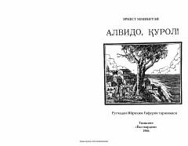

AQUrush va muhabbat haqidagi Xemingueyning o'lmas romani o'zbek tilida.
Ernest Xemingueyning mashhur romani 'Alvido, Qurol!' Ibrohim G'afurov tomonidan ruscha asliyatdan o'zbek tiliga tarjima qilingan. Roman Birinchi jahon urushi fonida amerikalik ofitser va hamshira o'rtasidagi muhabbat hamda urushning dahshatli oqibatlarini tasvirlaydi. Kitob Toshkentda 'Yosh gvardiya' nashriyotida 1986-yilda chop etilgan.